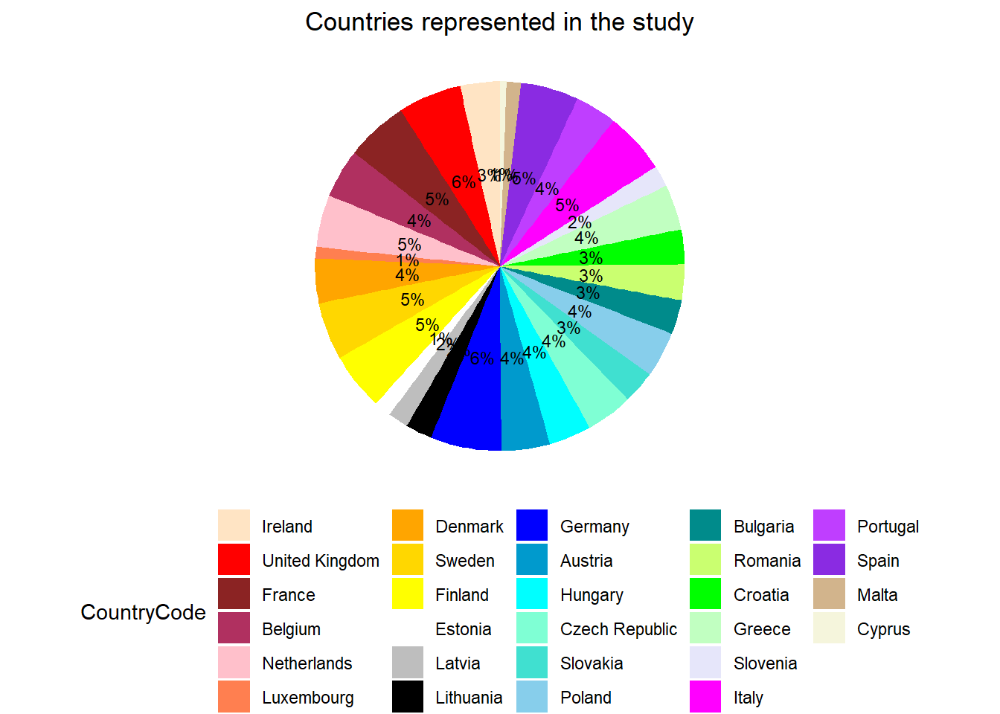
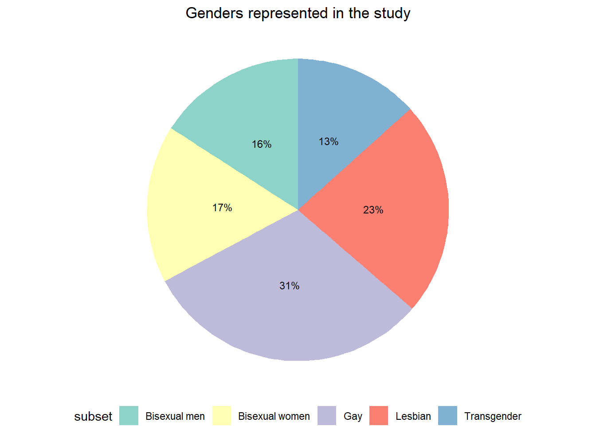

summary(cars) speed dist
Min. : 4.0 Min. : 2.00
1st Qu.:12.0 1st Qu.: 26.00
Median :15.0 Median : 36.00
Mean :15.4 Mean : 42.98
3rd Qu.:19.0 3rd Qu.: 56.00
Max. :25.0 Max. :120.00 library(tidyverse)── Attaching core tidyverse packages ──────────────────────── tidyverse 2.0.0 ──
✔ dplyr 1.1.4 ✔ readr 2.1.5
✔ forcats 1.0.0 ✔ stringr 1.5.1
✔ ggplot2 3.4.4 ✔ tibble 3.2.1
✔ lubridate 1.9.3 ✔ tidyr 1.3.1
✔ purrr 1.0.2
── Conflicts ────────────────────────────────────────── tidyverse_conflicts() ──
✖ dplyr::filter() masks stats::filter()
✖ dplyr::lag() masks stats::lag()
ℹ Use the conflicted package (<http://conflicted.r-lib.org/>) to force all conflicts to become errorslibrary(ggplot2)
library(dplyr)
survey <- read_csv("LGBT_Survey_DailyLife.csv") Rows: 34020 Columns: 7
── Column specification ────────────────────────────────────────────────────────
Delimiter: ","
chr (7): CountryCode, subset, question_code, question_label, answer, percent...
ℹ Use `spec()` to retrieve the full column specification for this data.
ℹ Specify the column types or set `show_col_types = FALSE` to quiet this message.glimpse(survey)Rows: 34,020
Columns: 7
$ CountryCode <chr> "Austria", "Austria", "Austria", "Austria", "Austria", …
$ subset <chr> "Lesbian", "Lesbian", "Lesbian", "Lesbian", "Lesbian", …
$ question_code <chr> "b1_a", "b1_a", "b1_a", "b1_a", "b1_a", "b1_a", "b1_a",…
$ question_label <chr> "In your opinion, how widespread is offensive language …
$ answer <chr> "Very widespread", "Fairly widespread", "Fairly rare", …
$ percentage <chr> "8", "34", "45", "9", "4", "4", "21", "52", "20", "4", …
$ notes <chr> NA, NA, NA, NA, "[0]", NA, NA, NA, NA, NA, "[0]", NA, N…row.has.na <- apply(survey, 1, function(x){any(is.na(x))})
sum(row.has.na)[1] 18724survey_clean <- survey[row.has.na,]
clean_data = subset(survey_clean, CountryCode != "Average")
data <- clean_data %>%
group_by(CountryCode)%>%
summarise(count=n())%>%
mutate(Percentage = count / sum(count) * 100) %>%
arrange(desc(Percentage))
country_order <- c("Ireland", "United Kingdom", "France", "Belgium", "Netherlands", "Luxembourg",
"Denmark","Sweden","Finland","Estonia","Latvia","Lithuania",
"Germany","Austria","Hungary","Czech Republic","Slovakia","Poland",
"Bulgaria","Romania","Croatia","Greece","Slovenia",
"Italy","Portugal","Spain","Malta","Cyprus")
data$CountryCode <- factor(data$CountryCode, levels = country_order)
# Arrange the data by the specified order of countries
data <- arrange(data, CountryCode)
ggplot(data) + aes(x="", y = Percentage, fill = CountryCode)+
geom_bar(width = 1, stat = "identity") +
theme_void() +
theme(legend.position = "bottom") +
geom_text(aes(label = paste0(round(Percentage), "%")), position = position_stack(vjust =0.5),size = 3)+
scale_fill_manual(values = c("bisque","red", "brown4", "maroon", "pink","coral",
"orange","gold","yellow", "white","gray","black",
"blue", "deepskyblue3","cyan","aquamarine","turquoise","skyblue",
"cyan4", "darkolivegreen1","green","darkseagreen1", "lavender",
"magenta","darkorchid1","blueviolet","tan", "beige")) +
labs(title = "Countries represented in the study") +
theme(plot.title = element_text(hjust = 0.5))+
coord_polar("y", start = 0) 
data_1 <- clean_data %>%
group_by(subset)%>%
summarise(count=n())%>%
mutate(Percentage = count / sum(count) * 100) %>%
arrange(desc(Percentage))
ggplot(data_1) + aes(x="", y = Percentage, fill = subset)+
geom_bar(width = 1, stat = "identity") +
theme_void() +
theme(legend.position = "bottom") +
geom_text(aes(label = paste0(round(Percentage), "%")), position = position_stack(vjust =0.5),size = 3)+
scale_fill_brewer(palette = "Set3") +
labs(title = "Genders represented in the study") +
theme(plot.title = element_text(hjust = 0.5))+
coord_polar("y", start = 0) 